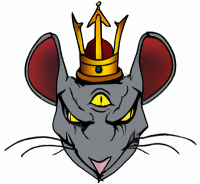

Kolmesilmäinen rottakuningas

Mekaniikat
- Category
- Edicts
- Anathema
- Areas of Concern
- Follower Alignments
Edut
- Divine Ability
- Divine Font
- Divine Skill
- Favored Weapon
- Domains
- Cleric Spells
Kolme silmää, kolme mieltä Kuningas kulkee rottien edeltä Kuran lordi, kullan kumartaja Nöyrän rotan kiivas armahtaja
Salaperäinen jumala, jota lähes kaikki Rottalaiset palvovat jollain tavalla. Fanaattiset kultistit uhraavat ihmislapsia hänen korkeutensa nimeen, kun taas sivistyneemmät rottalaiset tyytyvät pitämään kuninkaan vihan loitolla pienillä ruoka- tai rahauhreilla. Kolmesilmäinen rottakuningas kuvataan vahvana, ahneena ja mielipuolena jumalana, joka saattaa ensin siunata seuraajansa ja seuraavana päivänä kirota heidät.
Katkera luojajumala
Legendan mukaan Rottakuningas turhautui muihin jumaliin, jotka olivat paapomisellaan tehneet maailman muista kansoista ylimielisiä ja laiskoja. Hän lähetti maailmaan vitsauksen, rottalaiset, jonka tehtävänä oli levitä kuin rutto ja tehdä elämästä kärsimystä. Rottakuningas täytti lapsensa sekopäisellä raivolla, ja pitkään he taistelivatkin sivistystä vastaan tehden muiden rotujen elämästä helvettiä. Mutta tämä jumalallinen siunaus menetti voimansa aikanaan. Jotkut rottalaiset uskovat, että jopa jumalalla on rajansa ja että hän ei enää jaksanut pitää vihan liekkiä yllä. Toiset taas pitävät syynä sitä, että Rottakuninkaassa on hippusellinen kohtuullisuutta, ja että muut jumalat olivat nöyrtyneet tarpeeksi. Joka tapauksessa nykypäivän rottalaiset ovat kaukana siitä verenhimoisesta laumasta, joka maan päällä aikanaan oli.
Kolmesilmäisen siunaus
Nykyään mielipuolinen raivo on yksittäisten rottalaisten ”siunaus”. Sitä on rukoiltu vaikeina aikoina, kun kansalla ei ole muuta vaihtoehtoa kuin taistella vihollistaan vastaan, mutta myös pelätty rauhan vallitessa. Ei tiedetä, miksi joskus hulluus valtaa rottalaisen, mutta heidän yhteisöissään tällaiset tappokoneet ansaitsevat syvää kunnioitusta ja pelkoa. Siunauksen saanutta yritetään yleensä suojella ja ohjata vihollisten suuntaan. Siunaus joskus kuluu loppuun ja rottalainen palaa lähes ennalleen, mutta useimmiten raivopäinen yksilö kohtaa loppunsa taistelukentällä.